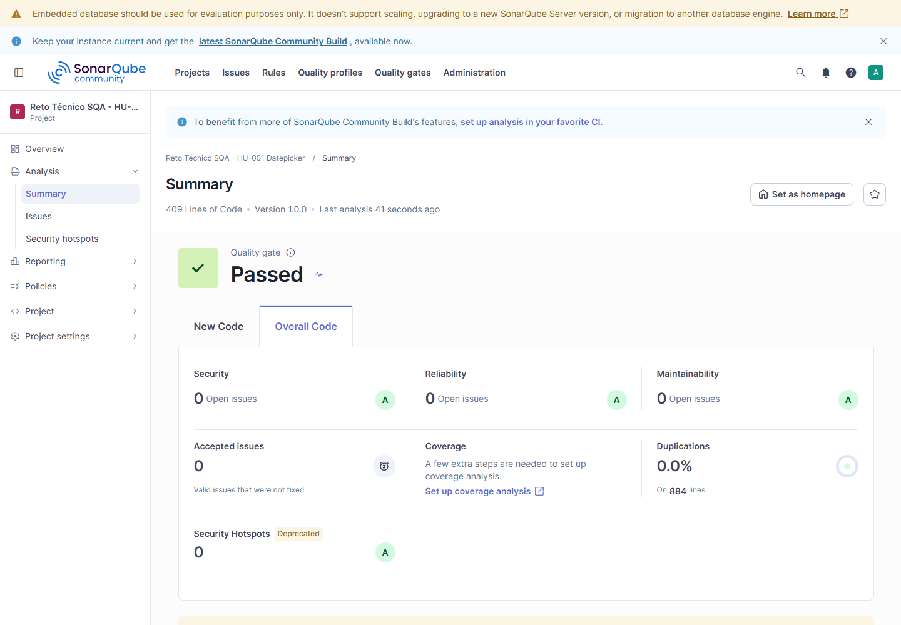

Puerta de calidad APROBADA
| Indicador | Resultado |
|---|---|
| Puerta de calidad (Quality Gate) | APROBADA |
| Errores (Bugs) · Confiabilidad | 0 · A |
| Vulnerabilidades · Seguridad | 0 · A |
| Puntos críticos de seguridad (Hotspots) | 0 · A |
| Code smells · Mantenibilidad | 0 · A |
| Deuda técnica | 0 min |
| Duplicación | 0.0 % |
| Líneas de código | 409 |
| Archivos · Clases · Métodos | 20 · 20 · 46 |
| Complejidad cognitiva | 8 |
| Densidad de comentarios | 23.0 % |
| Incidencias abiertas | 0 |
| Métrica | Umbral | Valor | Estado |
|---|---|---|---|
| new_duplicated_lines_density | mayor que 3 | 0.0 | Cumple |
| new_violations | mayor que 0 | 0 | Cumple |
src/main/java y src/test/java) con la regla de calidad por defecto (Sonar way) para Java.class de un elemento). Se corrigieron con WebElementFacade.hasClass(...) y el análisis final quedó sin incidencias.sonar.coverage.exclusions en build.gradle): el proyecto es en sí una automatización de pruebas web y no tiene pruebas unitarias sobre su propio código. Su verificación es la ejecución de los 9 escenarios, todos exitosos.
gradlew.bat sonar -Dsonar.host.url=http://localhost:9000 -Dsonar.token=<token>